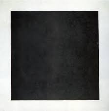

Чорний квадрат
Матеріал з Вікіпедії — вільної енциклопедії.
У Вікіпедії є статті про інші значення цього терміна: Чорний квадрат (значення).
«Чорний квадрат» («Чорний супрематичний квадрат») — картина українського художника- авангардиста Казимира Малевича, виконана в стилі супрематизму, найімовірніше, в 1915 році, коли він проживав у Росії. Зберігається в Державній Третьяковській галереї в Москві.
Цю картину Малевич вважав вершиною своєї творчості, адже на ній немає жодних предметів — якщо традиційне образотворче мистецтво наслідує щось із дійсності, то ця картина не наслідує нічого; вона не мистецтво як зображення чогось конкретного, вона — мистецтво як узагальнена форма та колір.

Зміст
- Композиція
- Символізм
- Історія картина
- Реакція критиків
- "Чорний квадрат" у літературі
- Останні експозиції
- Паралелі в мистецтві
- Див.також
- Примітки
- Посилання
Композиція
Картину виконано олійною фарбою на квадратному шматку картону розміром 79,5 на 79,5 см[2]. Хоча на перший погляд вона зображає чорний квадрат, фігура не має прямих кутів.
Казимир Малевич характеризував її як чотирикутник, зумисне трохи відхиляючи кути від прямих, аби створити незавершену форму, що прагне до руху[3]. Вже незадовго після створення фарба на оригінальній картині розтріскалася. Її копії, виконані самим автором, перебувають у кращому стані[2].
Символізм
«Чорний квадрат» являє собою безпредметне мистецтво — у картині немає нічого, що наслідувало б дійсність, тільки узагальнені форма та колір. У квадраті підсумовано всю повноту світу; це фігура, в якій починаються й закінчують всі сенси; всі протилежності знаходять в ній гармонію замість розпадатися на окремі образи[4].
Художник пояснював зображене на картині як чисте відчуття безпредметності: чорний чотирикутник — це відчуття, не обмежене будь-яким узятим з дійсності художнім образом, а білий фон — порожнеча за межею відчуттів, яка дозволяє це відчуття окреслити[4].
Історія картини
У 1913 році Малевич виконав ескізи декорацій для вистави Михайла Матюшина «Перемога над сонцем». З-поміж них був і ескіз чорного квадрата, тому художник вважав часом появи «Чорного квадрата» саме 1913 рік[5]. На картині, відомій як «Чорний квадрат», спочатку було дві кольорові композиції, пізніше покриті чорною фарбою. Також, під шаром чорної фарби міститься напис «Битва негрів у чорній печері», що відсилає до жартівливої картини Альфонса Алле, про яку Малевич міг чути від Михайла Ларіонова. Лишається неясним чи було приховування попередніх композицій під чорною фарбою частиною символізму «Чорного квадрата», чи Малевич зробив так, бо просто не мав чистого полотна[6]. Художник створив для своєї роботи особливу фарбу, що не блистіла та не блякла з часом[7]. Остаточне завершення картини датується 8 червня 1915 року (за старим стилем)[8].
Робота була виставлена незавершеною на останній футуристичній виставці «0.10», що відкрилася в Петербурзі 19 грудня 1915 року. Серед тридцяти дев'яти картин, виставлених Малевичем на найвиднішому місці, в так званому «красному кутку», де зазвичай вішають ікони, висів «Чорний квадрат»[3].
Існує версія, що «Квадрат» виставлявся на «0.10», оскільки величезний зал потрібно було чимось заповнити. Ця інтерпретація заснована на листі одного з організаторів виставки Малевичу:
«Потрібно писати зараз багато. Приміщення дуже велике, і якщо ми, 10 чоловік, напишемо картин 25, то це буде ледь-ледь»[9].
Паралелі в мистецтві
До «Чорного квадрата» існували й інші картини чи ескізи авторства відомих осіб, цілком замальованим чорною фарбою:
-
«Велика темрява» (1617) Роберта Фладда;
- «Вид на Ла Хог (під покривом ночі)» (1843) Шарля Альберта Берталя;
- «Сутінкова історія Росії» (1854) Гюстава Доре;
- «Нічна бійка негрів у підвалі» (1882) Пола Білголда;
- «Битва негрів у глибокій печері темної ночі» (1884) Альфонса Алле. Художник відомий і іншими жартівливими творами, наприклад, цілком білою картиною «Перше причастя анемічних дівчаток серед снігу» (1883) чи нотним записом маршу без нот.